TVV RESEARCH SLATE — October 15, 2026 — 11 desks
1. Major Geopolitical Conflict Developments
- ★ JMIC Update 104, hold since Oct 11, kept Hormuz SEVERE and warned outbound vessels in the southern Omani corridor of projectile risk and AIS-on ships of elevated targeting under the NCAGS-facilitated path. JMIC Update 104 · Regulas JMIC 104 recap
- ★ UKMTO Warning 173-26 said a 19,000-tonne container ship was hit by a projectile on an outbound Hormuz transit at 1700 UTC Oct 13, with minor damage and no casualties. UKMTO Warning 173-26
- UKMTO Warning 172-26 said a 50,000-tonne container ship was hit by a projectile on an inbound Hormuz transit at 1640 UTC Oct 13, with minor damage and no casualties. UKMTO Warning 172-26
- ★ CENTCOM said late Oct 13 that US forces helped Gulf partners move more than 19 million barrels of crude through Hormuz on Oct 12, rejecting IRGC control claims. Gulf News CENTCOM barrels · INN CENTCOM rebuttal
- ★ Ukraine's Air Force said Russia launched two Kh-59 missiles and 580 drones from the evening of Oct 14, with air defences destroying or jamming 536 drones by 08:00 Oct 15. Ukrainska Pravda Air Force
- 8:40 a.m. ET update (X news summary, verify): X's news summary cites Ukraine reporting more than 850 Shahed-type drones launched from midnight to 9 a.m. Oct 15 across Kyiv and 15 regions, with six deaths; this is larger than the 580-drone figure above. X story: Russia drone assault
- Zelensky said the prior night's Russian strike used 39 ballistic missiles and more than 120 drones, leaving at least 600,000 people without electricity after hits on Kyiv-area plants. RFE/RL overnight strikes · Al Jazeera massive attack
- BBC reported Oct 14 that Starlink speed limits above 160 km/h disrupted Ukraine's interceptor and middle-strike drone missions overnight, according to a Zelensky adviser. BBC Starlink restrictions
- ABC News, tally hold since Oct 1: UKMTO has recorded 20 reported Hormuz attacks from that date through the two verified container-ship strikes logged for Oct 13. ABC Hormuz live updates
- Saudi Civil Defense said debris from two intercepted Houthi cruise missiles injured four people and damaged 15 Riyadh homes on Oct 13. Saudi Gazette Riyadh debris · Arab News interception
- 8:40 a.m. ET update (X news summary, verify): A Reuters investigation counts at least 135 Iranian missile and drone strikes on 84 Gulf energy sites since Feb 28, including Ras Laffan, Abqaiq and Fujairah. X story: Reuters Gulf energy strikes
- 8:40 a.m. ET update (X news summary, verify): Singapore's MPA said the Singapore-flagged container ship GFS Pride sank in the Strait of Hormuz on Oct 13 after a projectile strike, with all 21 crew evacuated. X story: GFS Pride sinks
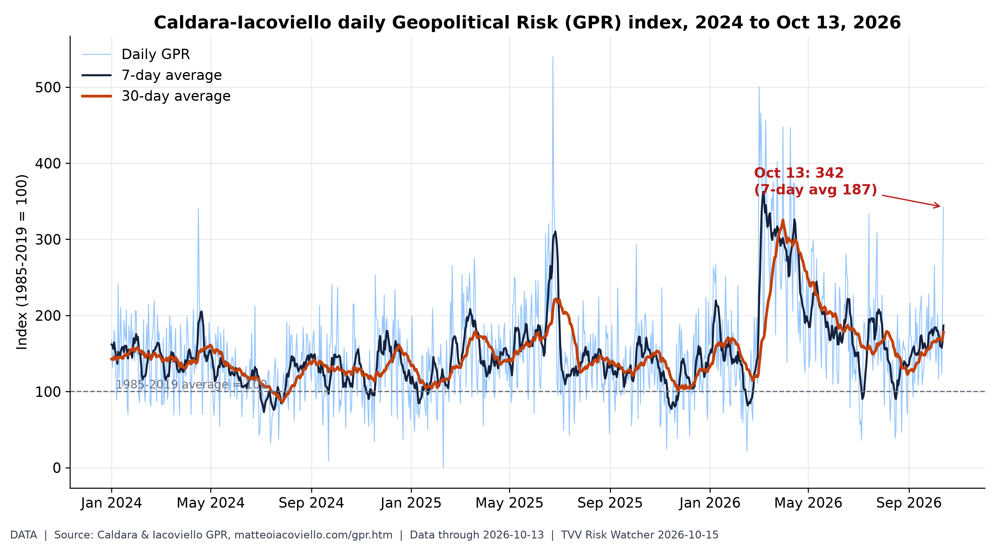 Daily Geopolitical Risk index. Daily GPR hit 342 on Oct 13, over triple its long-run norm (30-day avg 178), as Hormuz attacks and Russia's missile barrage hit the news. [Data; data as of 2026-10-13 (held: no newer point posted by 7 AM ET Oct 15)] Source: matteoiacoviello.com data page |
2. Major Terror / Security Incidents
- ★ Israel Police and Shin Bet indicted an 18-year-old Umm el-Fahm man on Oct 13 for an ISIS-pledged plot to attack IDF soldiers in Jerusalem's Old City. Jerusalem Post indictment · INN plot foiled
- DOJ complaint, hold since Oct 7, said that FBI agents arrested 18-year-old Sheikhdoon Abdullahi Mohamud of Richfield, Minnesota, after he bought an inert AK-47 for an ISIS-pledged Mall of America mass shooting planned for Oct 24. DOJ Mall of America complaint · AP FBI arrest
- FBI Director Kash Patel, hold since Oct 7, said the Mall of America case was among more than 1,100 attack plots the bureau says it has prevented, citing a 38% rise in foreign-terror disruptions. DOJ Mall of America complaint
- 8:40 a.m. ET update (X news summary, verify): Pakistani forces said they killed two Fitna al-Hindustan militants attacking a check post at Dosa Cross, Kachhi district, Balochistan, on Oct 15, with no personnel harmed. X story: Balochistan attack foiled
- 8:40 a.m. ET update (X news summary, verify): Hezbollah MP Hassan Fadlallah claimed the truck seized at Lebanon's Dahr al-Baidar checkpoint this week, reported to carry 500 to 780 kg of TNT and C-4, and demanded its return. X story: Hezbollah explosives truck
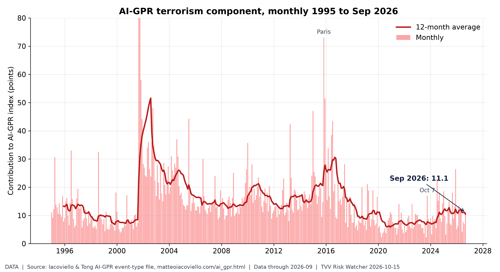
Terrorism share of geopolitical risk. The terrorism component of AI-GPR rose to 11.1 in September from 7.0 in August, near its March 2026 high of 13.3. [Data; data as of 2026-09 (held: monthly, next update early Nov)] Source: matteoiacoviello.com data page
3. Earthquakes and Eruptions
- ★ USGS recorded a magnitude 5.9 quake in the Fiji region at 1049 UTC Oct 14, green PAGER, a day after M6.8 and M6.7 shocks on the central Mid-Atlantic Ridge. USGS Fiji M5.9 · USGS M6.8 Mid-Atlantic
- USGS recorded a magnitude 6.8 quake on the central Mid-Atlantic Ridge at 1223 UTC Oct 13, hours after an M6.7 there, both green PAGER alerts. USGS M6.8 event page · USGS M6.7 event page
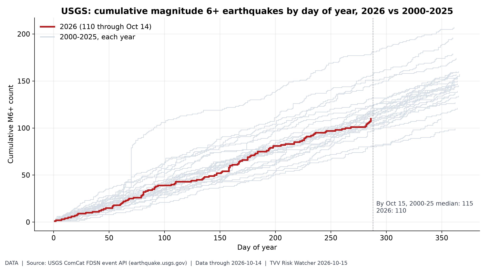
M6+ earthquake pace. 2026 has 110 M6+ quakes through Oct 14 (none since Oct 13 PNG M6.0) vs a 2000-25 median of 115: a normal pace; the risk is where they strike. [Data; data as of 2026-10-14 (USGS feed checked 7 AM ET Oct 15; last M6+ Oct 13)] Source: earthquake.usgs.gov data page
4. Solar / Space Weather
- ★ NOAA SWPC's 0030 UTC Oct 15 forecast expects peak Kp 3.33 through Oct 17, below storm levels, after a quiet 24 hours peaking at Kp 3. SWPC 3-day forecast · SWPC planetary K-index
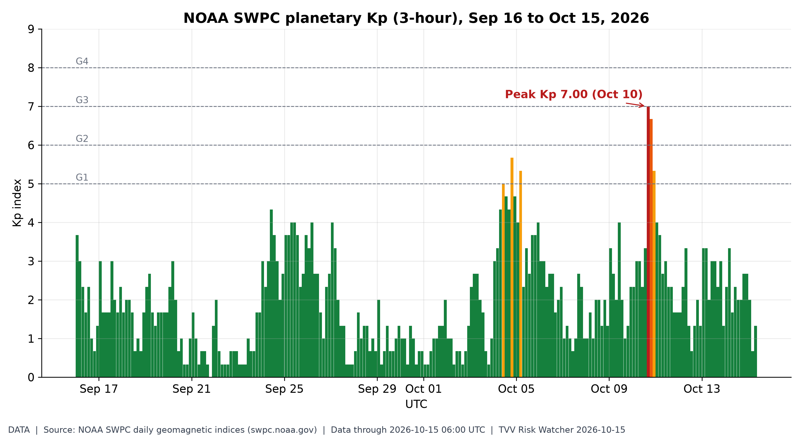 Geomagnetic activity, last 30 days. Kp peaked at 7.00on Oct 10, a strong storm; since then quiet, with Oct 15 so far at max Kp 2.00 and SWPC expecting no storms (max Kp 3.33) through Oct 17. [Data; data as of 2026-10-15 06:00 UTC (partial day)] Source: swpc.noaa.gov data page |
5. Critical Infrastructure / Transportation Disruptions
- ★ Isaias shut-ins fell to 202,371 barrels a day, 9.92% of Gulf oil output, plus 237 MMcf/d of gas, as of the MMA Oct 14 update, which said production had recovered to nearly 90% and would likely be the final daily note. BSEE/MMA Isaias update 8
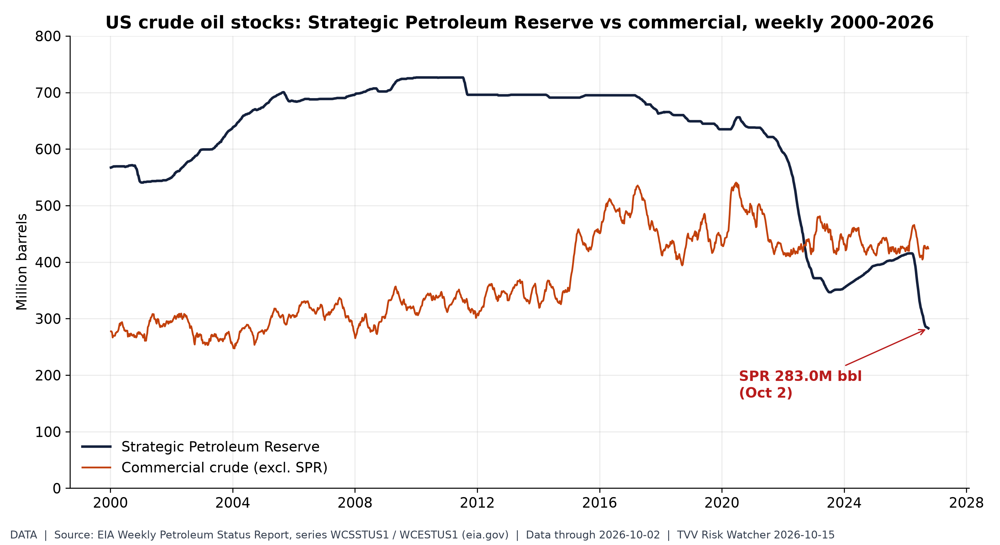
US emergency oil buffer. The SPR held 283M barrels on Oct 2, its lowest since 1982 and under 40% of its 2010 peak, while Hormuz and Gulf supply are disrupted. [Data; data as of 2026-10-02 (held: next EIA weekly report not yet posted at 7 AM ET Oct 15)] Source: eia.gov data page
6. Econo-Metrics
- ★ Gasoline: AAA's national regular average rose to $4.3344 on Oct 15 from $4.3333 a day earlier, still about $1.27 above the year-ago $3.0674. AAA national average
- ★ Electricity: EIA's STEO, hold since Oct 6, projects residential power at 18.2 cents/kWh in 2026 and 18.7 cents in 2027, after 3Q26 consumption rose 4%. EIA STEO electricity
- ★ CME FedWatch at 10:02 UTC Oct 15 priced a 68% chance of an Oct 28 hold and 32% for a 25bp hike, with cut odds near zero after the hotter September CPI. FedWatch mirror Oct 15 · CME FedWatch tool
- Indexes Oct 14: the Dow fell 0.09% to 51,621.48, the S&P 500 dropped 1.11% to 7,718.94 and the Nasdaq sank 1.88% to 26,692.87. Portfolio Terminal Oct 14 close · Investing.com US close
- AAA's national diesel average rose to $6.3173 a gallon on Oct 15 from $6.2997 a day earlier, versus $3.6554 a year ago. AAA national average
- BLS's CPI release on Oct 14 showed prices up 0.6% for the month and 3.7% on the year, with gasoline up 9.1% and core prices up 2.6% annually. CBS News CPI report
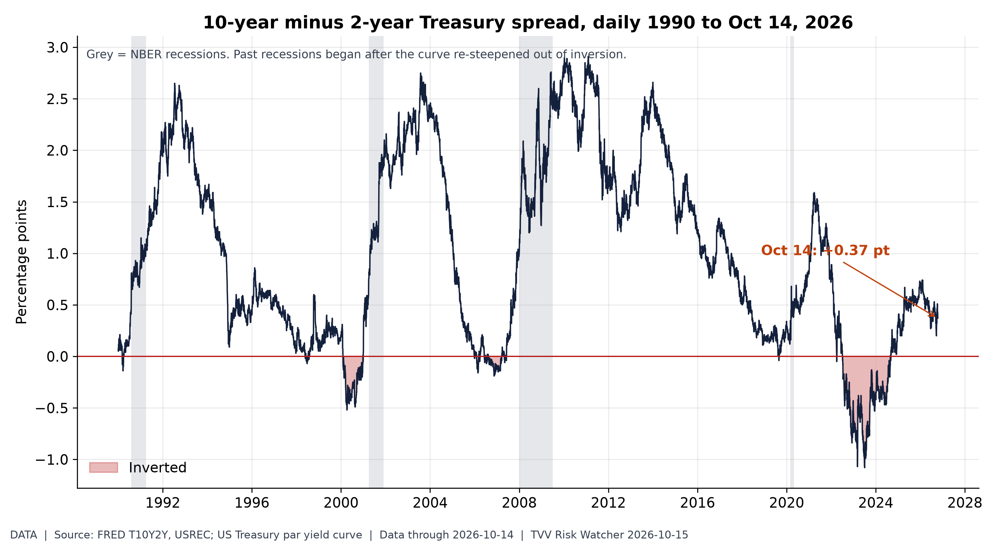 Yield curve after inversion. The 10Y-2Y spread is back positive at +0.37 after the 2022-24 inversion (Treasury: 10Y 5.19%, 2Y 4.82% Oct 14), the un-inversion phase that preceded past recessions. [Data; data as of 2026-10-14] Source: fred.stlouisfed.org data page |
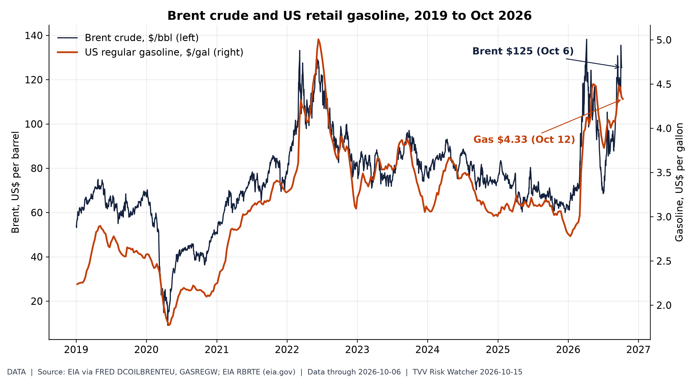
Oil shock at the pump. Brent is $125 after an April peak of $138, above 2022's high; US gasoline averages $4.33, driving September's CPI jump. [Data; data as of 2026-10-06 (Brent, EIA spot lags ~1 wk); 2026-10-12 (gasoline, weekly)] Source: fred.stlouisfed.org data page
7. Epidemic / Bio-Metrics
- ★ Critical Water Shortage: Maharashtra ordered all urban and rural local bodies to cut water supply at least 10% from Oct 16 after a deficient monsoon and El Niño concerns. Hindustan Times Maharashtra cut · The Hindu Pune Thursday shutoff
- Critical Water Shortage: Pune began suspending municipal water supply every Thursday from Oct 15 to stretch dam stocks, The Hindu reported Oct 14. The Hindu Pune Thursday shutoff
- ECDC said as of Oct 13 the DRC Bundibugyo Ebola outbreak had 9,144 confirmed cases and 4,410 deaths (data through Oct 12), with 79 new confirmed cases and 11 deaths on Oct 12. ECDC Ebola DRC update
- ECDC noted Uganda has declared its Ebola outbreak over after 42 days without a new confirmed case, while Kenya reported an imported fatal case linked to DRC travel. ECDC Ebola DRC update
- Georgia's health department confirmed an unvaccinated Macon County measles case on Oct 13, raising its 2026 total to 22, linked to Pennsylvania's 1,100-plus outbreak. Georgia DPH release
- CDC measles count, hold since Oct 8: 4,080 confirmed US cases reported in 2026, 4,062 of them across 47 jurisdictions. CDC measles cases
- Bangladesh dengue, hold since Oct 13: the DGHS dashboard last printed about 103,000 hospitalizations and 316 deaths for 2026, with intensifying prevention appeals. Daily Star dengue appeal · DGHS dengue dashboard
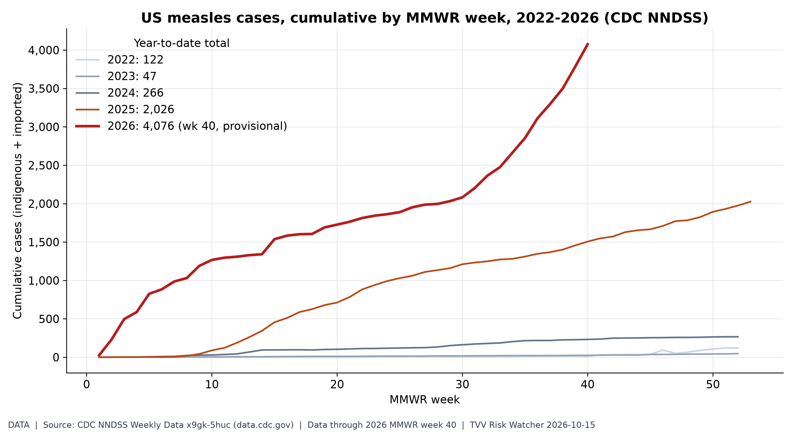 US measles resurgence. NNDSS shows 4,076 US measles cases through week 40, already about double all of 2025 (2,026); week 41 data were not yet posted on Oct 15. [Data; data as of 2026 MMWR week 40 (provisional; week 41 not yet posted Oct 15)] Source: data.cdc.gov data page |
8. Gold and Silver
- ★ Kitco at 6:06 a.m. ET Oct 15: gold $4,158.50, silver $56.82, copper $6.7002/lb; bitcoin $81,142, ether $2,371.63 and XRP $1.32. Kitco live prices
- Kitco showed gold up about 1.26% and silver up about 2.13% by 6:06 a.m. ET Oct 15 after Wednesday's CPI-driven selloff, with copper stamped from the Oct 14 4:00 a.m. quote. Kitco live prices
- 8:40 a.m. ET update: Kitco bid showed gold at $4,146.10, up $41.60 or 1.01%, and silver at $56.62, up 2.00%, slightly below the 6:06 a.m. print above. Kitco precious metals
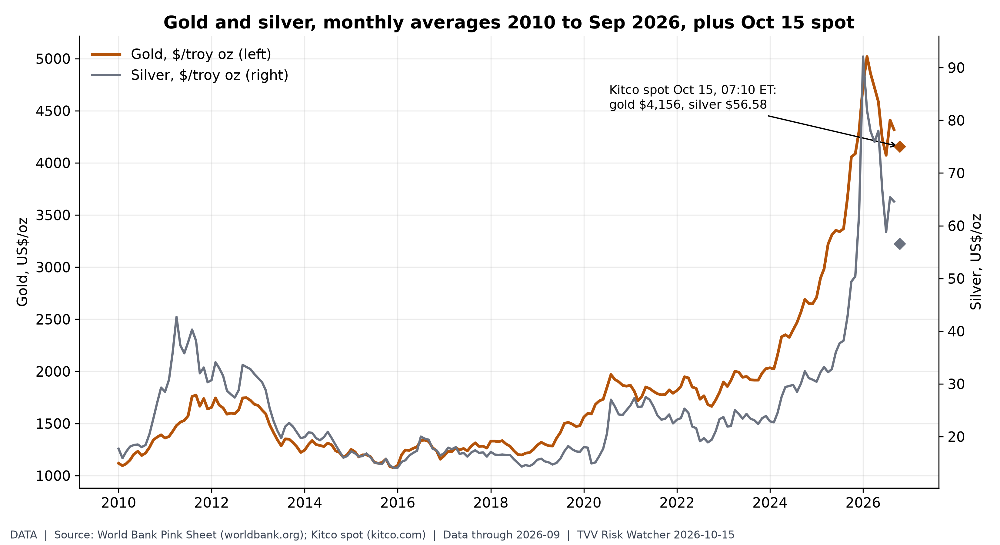 Haven metals: high but off peak. Gold averaged $4,319 in September, about 3x 2019 but off its $5,020 Feb 2026 peak; spot is $4,156 early Oct 15, up $52 on the day. [Data; data as of 2026-09 (World Bank monthly); 2026-10-15 07:10 ET (Kitco spot)] Source: worldbank.org data page |
9. Stock Averages and Nasdaq Major Movers
- ★ Gainers: Greenland Energy (GLND) +76.5%; Bending Spoons (BSP) +41.7%; Dreamland (TDIC) +39.9%; Losers: Hennessy VII (HVII) -50.9%; Zhibao (ZBAO) -46.0%; EOSU (EOSU) -32.7%; Oct 14 StockSetups Oct 14 movers
- ★ Gainers: Antelope (AEHL) +36.4%; CORD (CORD) +30.7%; MaxCyte (MXCT) +28.6%; Losers: Alaunos (TCRT) -31.7%; FBS Global (FBGL) -31.3%; CRWU (CRWU) -31.1%; Oct 14 StockSetups Oct 14 movers
- ★ Gainers: UnitedHealth (UNH) +4.7%; Dollar Tree (DLTR) +4.7%; Moderna (MRNA) +4.7%; Losers: Dell (DELL) -11.3%; Ciena (CIEN) -10.2%; Flex (FLEX) -9.5%; S&P Oct 14 Quant500 S&P movers · Closing Print Oct 14
- ★ Gainers: Bristol-Myers (BMY) +4.6%; Dollar General (DG) +4.0%; Kroger (KR) +3.9%; Losers: Lumentum (LITE) -9.3%; Coherent (COHR) -9.2%; Oracle (ORCL) -8.8%; S&P Oct 14 Quant500 S&P movers
- ★ Gainers: Universal Health (UHS) +3.8%; Gilead (GILD) +3.8%; Merck (MRK) +3.8%; Losers: Marvell (MRVL) -8.7%; Robinhood (HOOD) -8.5%; Super Micro (SMCI) -8.4%; S&P Oct 14 Quant500 S&P movers
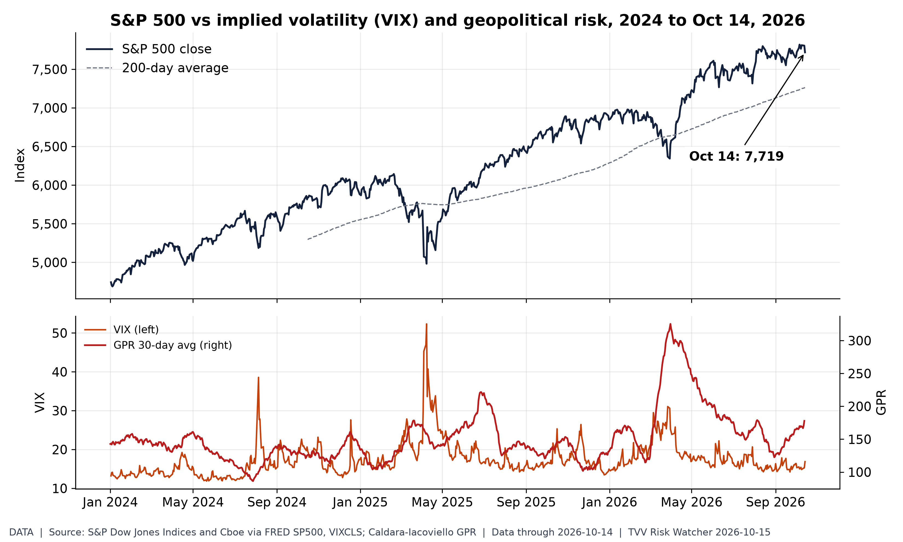
Calm tape, hot risk. The S&P 500 fell 1.1% to 7,719 on the hot CPI and VIX rose to 16.9, yet both sit far calmer than the elevated GPR: a complacency gap. [Data; data as of 2026-10-14 (S&P, VIX close); GPR to 2026-10-13] Source: fred.stlouisfed.org data page
10. Polymarket and Kalshi Sentiment Highlights
- ★ Ukraine ceasefire: Polymarket priced a Russia-Ukraine ceasefire deal by Dec 31 at 17.5% on Oct 15, with 7.5% by Nov 30 and 4.3% by Oct 31. Polymarket Ukraine ceasefire
- ★ Hormuz: Polymarket gave 12.5% odds on Oct 15 that Strait of Hormuz traffic returns to normal by Dec 31. Polymarket Hormuz normal
- FOMC: CME FedWatch put an Oct 28 hold at 68% on Oct 15, while Kalshi's hold contract last traded near 76 cents and the 25bp hike near 23 cents. Kalshi Oct Fed decision · FedWatch mirror Oct 15
- ★ US-Iran: Polymarket priced the US-Iran ceasefire continuing through the Nov 3 midterms at 76.5% on Oct 15. Polymarket US-Iran ceasefire
- ★ Midterms House: Democrats traded at 90.5% to win the House on Polymarket on Oct 15, with Election Day Nov 3. Polymarket House 2026
- Midterms Senate: Democrats traded at 63.5% to control the Senate on Polymarket as of Oct 15, Republicans at 36.5%. Polymarket Senate 2026
- Yemen: a Saudi-Houthi ceasefire announced by Dec 31 traded at 31.5% on Polymarket Oct 15; the Oct 31 contract held 4.5%. Polymarket Saudi-Houthi ceasefire
- Pump prices: Kalshi priced October's AAA national average finishing above $4.30 near 39% on Oct 15, above $4.40 near 17% and above $4.50 near 7%. Kalshi AAA October market
- Hormuz peak: Kalshi's week-to-Oct 18 market showed about 96% odds of peak daily traffic above 3, 62% above 5 and 8% above 8 on Oct 15. Kalshi Hormuz peak traffic
- AGI: Kalshi priced any-company AGI before 2027 near 8% on Oct 15 (KXAGICO-COMP-26Q4 last 8 cents), versus OpenAI AGI before 2027 at 12.5% on Polymarket. Kalshi AGI by date · Polymarket OpenAI AGI
- OpenAI AGI: Polymarket priced an OpenAI AGI announcement before 2027 at 12.5% on Oct 15. Polymarket OpenAI AGI
- Fed dissent: Polymarket priced zero October FOMC dissenters at 29.5% on Oct 15, with one dissenter at 17% and two at 19.5%. Polymarket Oct Fed dissent
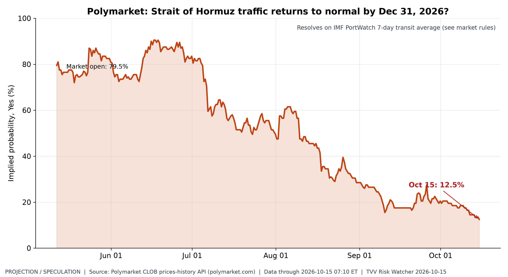 Hormuz normalisation odds. Traders cut odds of normal Hormuz traffic by Dec 31 from 80% in May to 12.5%, pricing a prolonged closure. [Projection/Speculation; data as of 2026-10-15 07:10 ET] Source: polymarket.com data page |
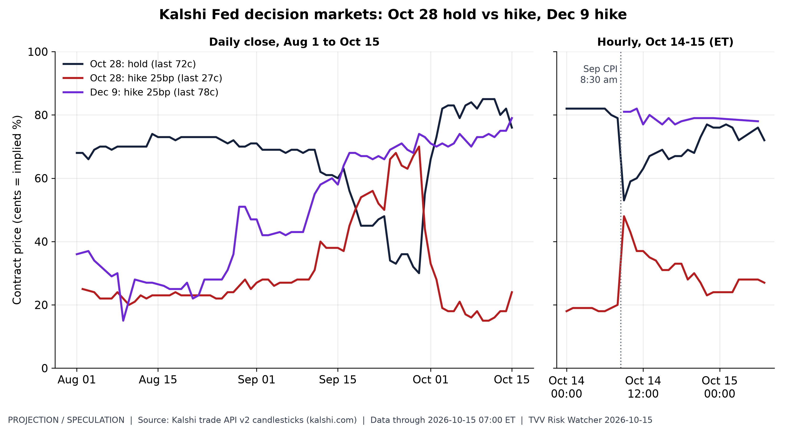
Fed hike odds after CPI. Kalshi's Oct 28 hold slid from 82c before the hot CPI to about 72c early Oct 15, and a Dec 9 hike trades near 78c: tightening risk is back. [Projection/Speculation; data as of 2026-10-15 07:00 ET] Source: kalshi.com data page
11. Tech-Metrics
- ★ Cybercab authorized: CyberCab.News said Oct 15 Texas DMV records show 349 Cybercabs among 769 Tesla Robotaxi vehicles after a 30-unit batch; fsddb's live total matches 769. CyberCab.News Texas 349 · fsddb TxDMV mirror
- Cybercab in service: fsddb's receipt tracker showed 227 unique Tesla plates and 354 logged rides by Oct 15, averaging $8.94, with only eight plates active in 30 days. fsddb plate tracker
- Cybercab production ramp: fsddb and CyberCab.News attribute the +30 Texas VINs this week to a fresh Cybercab batch; Tesla has published no factory output total as of Oct 15. CyberCab.News Texas 349 · fsddb TxDMV mirror
- ★ SI-AGI Danger / Arrival Index: AGI-before-2027 odds on Oct 15 stood near 8% on Kalshi any-company and 12.5% for OpenAI on Polymarket. Kalshi AGI by date · Polymarket OpenAI AGI
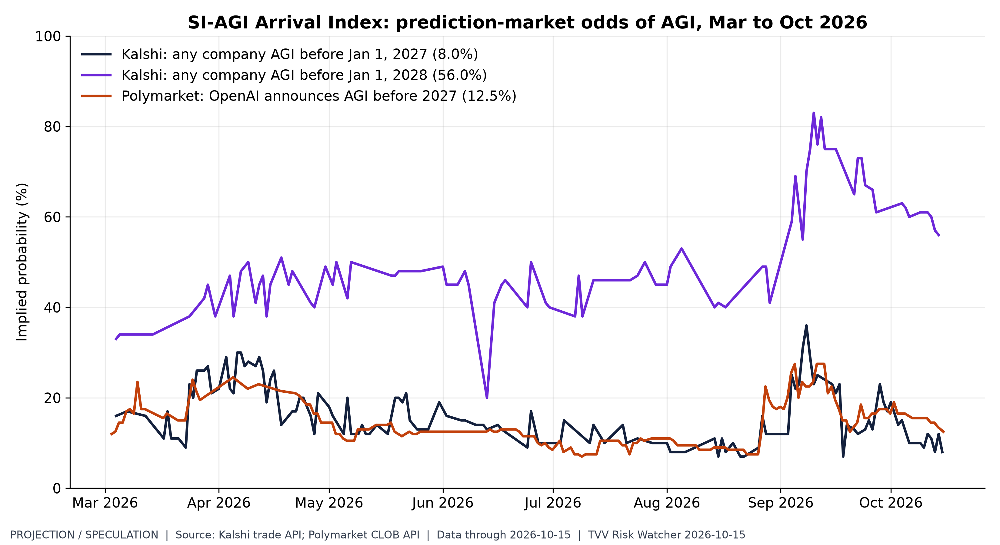 SI-AGI arrival odds. Markets price AGI before 2027 at only 8-12.5% but before 2028 near 56%: a fast-closing window for AI governance risk. [Projection/Speculation; data as of 2026-10-15] Source: kalshi.com data page |
TECHVESTVENTURES ACTION-ALERT — October 15, 2026
EDITOR — Michael Hentschel
Most news events require or spawn no action or reaction, some (but not many) are or become warnings. We draw attention to substantial lifestyle risks and market risks in particular, some created by Mid-Term Vote anxieties, Middle East tensions, vast over-indebtedness globally, and other events we track. Longer term but capable of causing sudden power surges as serious as the Carrington Event. Climate instability occasioned by long-term cyclical solar electro-magnetic flares, is becoming much more prominent and even more likely. New AI predictive analytics and pattern seekers are pointed in some of these directions, and we monitor imminent likelihood. Some readers might hedge and others might see opportunity. The above is not investment advice.